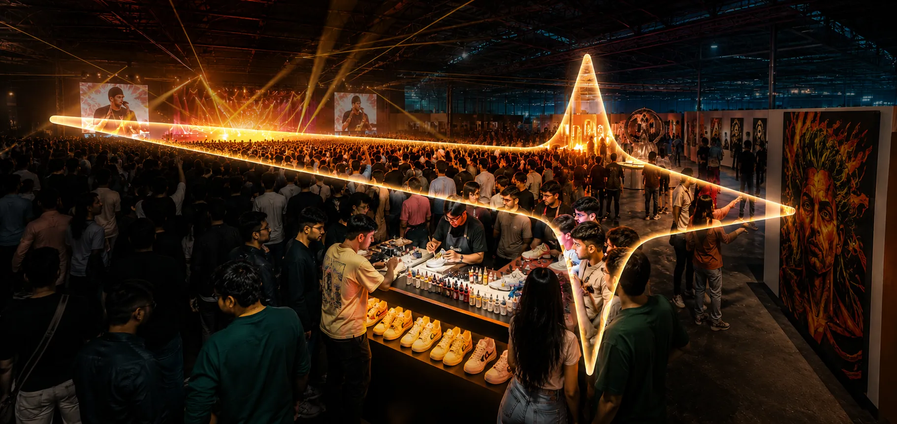

Comet didn't rent a celebrity. It earned a movement, and turned ₹29 Cr into ₹100 Cr.
A culture-led year that deployed ₹35 Cr of a ₹50 Cr war chest, for a blended return of 2.4x at base and 2.9x at the stretch.
A breakout brand, not the underdog the brief assumed
Comet is a homegrown Indian sneaker label whose whole philosophy is "Never Shy, Never Sorry." The brief was an MBA assignment: plan a year of digital marketing for a brand of your choice on a ₹50 Cr budget. I owned the media plan and budget on the original team project, then rebuilt the whole thing solo in mid-2026 against live data, so the version here is mine end to end.
Rebuilding it mattered, because the 2024 brief planned for a brand that no longer exists. By FY25 Comet had grown revenue roughly fourfold to ₹29.1 Cr, raised about $6.6m from Elevation and Nexus, and built a 3.7-lakh Instagram following. It sells on its own site and on Myntra, and it is opening flagship stores. This is a category breakout, not a brand begging to be noticed. The plan had to start from that truth.
Comet is wanted more than it is bought
Run Comet against its rivals on Google Trends and a clear pattern shows up: on clean, like-for-like search terms, Comet sits neck and neck with the category's demand leader, Neeman's, while earning roughly a third of Neeman's revenue. The brand has won the attention; it has not converted it. The bottleneck is the bottom of the funnel, not the top.
Two other facts shaped the job. The category's obvious territories are taken: Gully Labs owns heritage craft, Neeman's owns comfort and sustainability. And the ₹50 Cr in the brief is about 1.7 times Comet's entire annual revenue, a figure no real brand simply spends. So the task was never "make Comet famous." It was: find an unclaimed space, convert the demand that already exists, and treat the war chest like it was my own money.
Young India is tired of performing a perfect life
India's Gen Z is 377 million people who drive about half of all footwear spending, and they are quietly exhausted by the gap between the lives they post and the lives they live (Snap and BCG). The cultural tide is turning from aspiration towards honesty. That is not a trend Comet has to borrow. It is already written on the brand's own channel: a universe of conformity, and a comet that breaks the pattern, fearless and unapologetic.
The real flex isn't the highlight reel. It's being who you actually are. Comet is the one sneaker brand that can credibly say it, because it already does.
That gave Comet a word no rival can take: not heritage, not comfort, but Realness. The perceptual map made the white space obvious.
Own a conversation, then convert it, on a budget you respect
I planned the year on a SOSTAC spine, with the sub-frameworks doing real work at each stage. TAM-SAM-SOM sized the prize: the ₹100 Cr target is about 1.25% of an ₹8,000 Cr serviceable market, so the ambition is aggressive on growth but modest on share, which is what makes it credible. STP set three personas (the culture native, the self-expressor, the striver) plus an anti-persona to stop wasted spend, and landed the positioning on Realness.
The headline call was financial discipline. The brief allowed ₹50 Cr; I deployed ₹35 Cr and held ₹15 Cr in reserve, released only against proof mid-campaign. The model is earned-first (PESO and RACE): brand and earned media create demand cheaply, and paid performance harvests it at the festive peak. The north-star metric is free and falsifiable: share of search within the culture-led segment, the measurable version of "most-wanted sneaker brand."
"The Real Flex": one idea, fired in a six-week burst
The campaign is built on Comet's own myth. It opens with State of the Younion, a commissioned annual report on the gap between what young India posts and what it lives, which earns the brand the right to the conversation before it sells anything. That data sets up a brand film, the launch of the Apex line, and a cipher hunt: permitted graffiti murals across Mumbai, Bengaluru and Delhi double as puzzles, an NFC chip in each pair is the golden ticket to an underground party tour (run with Playace and independent music labels), and the party artwork then travels as a public street-art exhibition in Ahmedabad, timed to the new flagship.
Two design choices keep it honest and sharp. The hype is concentrated into a six-week burst that crests on the October festive peak, because Indian footwear demand spikes with the Great Indian Festival and Diwali and holds high to January, so the noise lands exactly when people are buying. And rather than rent a celebrity, the influencer plan leans on the efficient tiers, mid, micro and nano creators, after triangulating that a single reel from a top creator runs ₹25-30 lakh, money better spent on reach than on one famous face.
The media plan itself is built to an agency standard: quarter-by-quarter line items with sourced India rates (Meta CPM ₹80, Search CPC ₹25, YouTube CPV ₹1, and so on), live formulas for every derived metric, a separate influencer table, an out-of-home table with each graffiti wall costed individually, and a Q4 Performance Max store-visit campaign on its own footfall logic. Every rupee reconciles to ₹35 Cr. See the workbook.

The numbers, and the honest version of them
Worked bottom-up, the paid performance channels (₹13 Cr of clicks at a blended ₹15 CPC and a 1.5% conversion rate) deliver about ₹58 Cr in tracked revenue. The brand-building half of the spend, marketplace, organic, direct and repeat purchase, bridges the rest to a ₹85 Cr base case and a ₹100 Cr stretch. That is the point of spending 40% on fame: it does not all convert this month, it banks demand that converts later.
A customer acquisition cost of about ₹1,850 against a ₹4,500 average order means the first pair roughly pays back acquisition, and every repeat purchase is profit. I have not pretended ₹100 Cr is a certainty: it is the stretch, reachable only if the efficient rates hold and the earned engine delivers, which is exactly why ₹15 Cr sits in reserve to pour into whatever is working. The brand win is the one I would judge it on: becoming the most-searched homegrown sneaker name in India.
Sources: Indian Retailer (Comet FY25 revenue) · Grand View Research (India sneaker market) · Snap & BCG (Gen Z India) · Improvado (media maths) · ad rates from Superads, OwlClaw, ReuAds and TheDMSchool; influencer rates from Idiotic Media and Exchange4media. Google Trends run on like-for-like terms. Full citations and the live model are in the workbook.